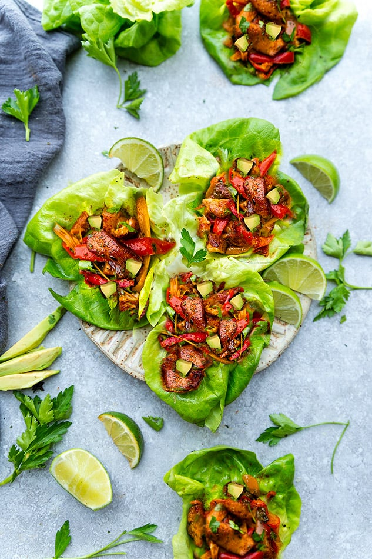

Ingredients List
Homemade Fajita Seasoning
-
3 tbsps chili powder
-
1 1/2 tbsps smoked paprika
-
2 tsps onion powder
-
2 tsps garlic powder
-
1/2 tsps cayenne pepper
-
1 tsps dried oregano
-
2 tsps sea salt
Cilantro-Lime Sauce
-
1 c plain low-fat Greek yogurt
-
1 tbsps homemade fajita seasoning
-
1 clove garlic, peeled and finely minced
-
2 tbsps fresh cilantro, finely chopped
-
2 tbsps fresh lime juice
-
Salt and pepper, to taste
Fajitas
-
2 tbsps extra virgin olive oil
-
1 red bell pepper, sliced thin
-
1 green bell pepper, sliced thin
-
1 yellow bell pepper, sliced thin
-
1 orange pepper, sliced thin
-
1/2 small red onion, sliced thin
-
1 tbsps balsamic vinegar
-
Salt and Pepper, to taste
-
3 c rotisserie chicken, shredded
-
2-3 tbsps homemade fajita seasoning
-
1/4 c chicken stock, preferably organic
-
1/4 c fresh cilantro, roughly chopped
-
3 green onions, green parts only, sliced
-
2 tbsps fresh lime juice
-
Romaine lettuce, washed and seperated into individual leaves
Instructions
Fajita Seasoning
-
If you don't like spicy, leave out the cayenne and make sure your chili
powder is mild.
-
Prepare the fajita seasoning by combining all ingredients in a small bowl
and stirring until thoroughly blended. Store any excess in an airtight container
for later use.
Cilantro Lime Sauce
-
Prepare the cilantro-lime sauce by thoroughly combining all ingredients in a
medium glass or other non-reactive bowl. Cover and place in the refrigerator until ready to use.
Fajitas
-
Heat the olive oil in a large skillet over medium-high heat. Add the bell peppers, onion, and balsamic vinegar to the skillet and season with
salt and pepper, to taste. Cook for 10-12 minutes or until the onions and peppers are crisp tender.
-
Add the shredded rotisserie chicken, fajita seasoning, and chicken stock to the skillet and stir to combine. Cook until heated through and excess liquid is
gone, approximately 3-4 minutes. Season with additional salt or fajita seasoning, if desired.
-
Remove skillet from heat and stir in the cilantro, green onions, and fresh lime juice. To serve, spoon mixture onto individual Romaine lettuce leaves and top with
a drizzle of cilantro-lime sauce. Enjoy!
